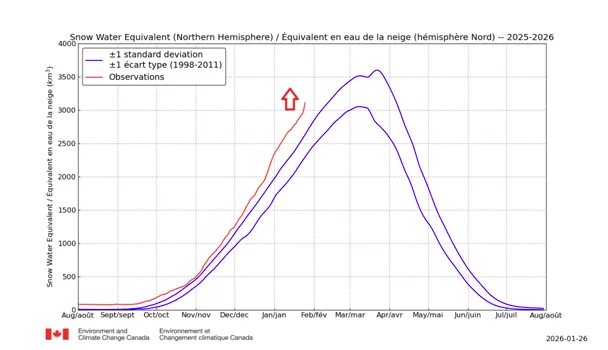
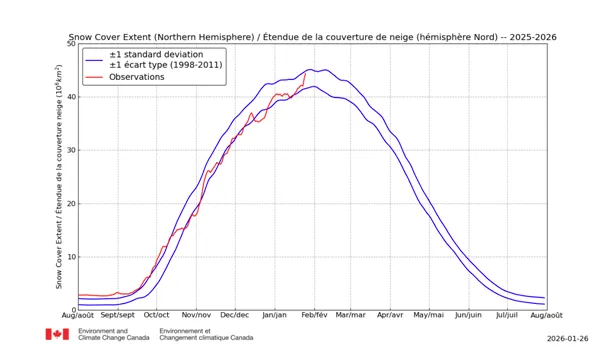
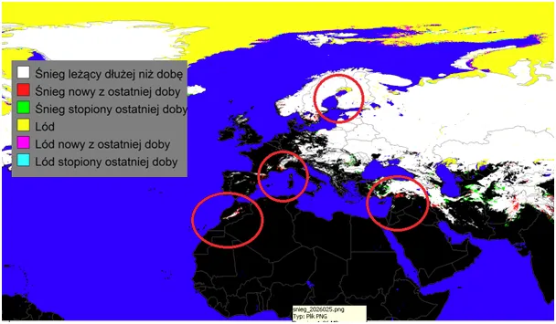
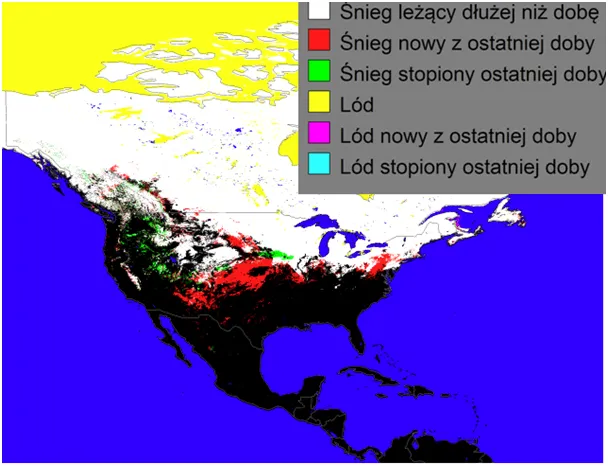
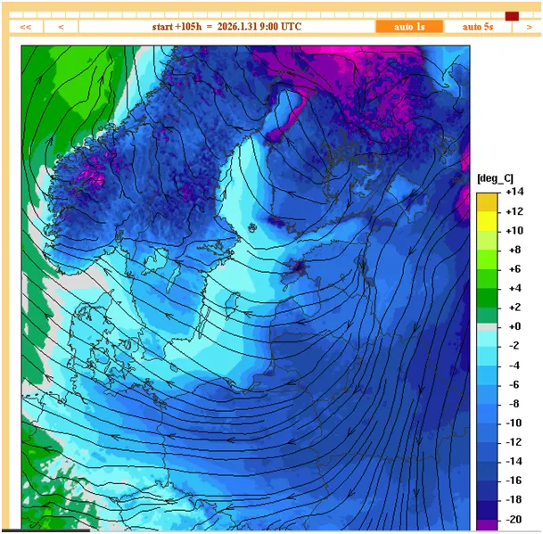

Luty podkuj buty!
2026.01.27
Pierwszy wykres to woda zamrożona w śniegu na naszej półkuli. Od początku sezonu znacznie powyżej normy, a od tygodnia proces zaśnieżania mocno przyspieszył. W komplecie z wykresem drugim, "obszar pokryty śniegiem", dają obraz sytuacji.


Dotychczas ponadprzeciętne ilości zalegały na obszarze poniżej średniej wieloletniej, co dało bardzo grubą pokrywę. Obecnie zasypywane są coraz większe obszary także daleko na południu zarówno a Ameryce jak i w Azji i symbolicznie w Afryce.


Śnieg w Maroko nie jest niczym nowym, ale w tym sezonie zalega bardzo długo i w dolinach, gdzie był rzadkością, co nie pozwala mówić o epizodycznym zjawisku tylko o przesuwaniu się na południe granicy występowania zimy. Potwierdza to długo leżący śnieg w Syrii. Śnieg od kilku lat pojawia się też na tureckich plażach i dolinach wybrzeża Morza Śródziemnego, nie notowano takich zdarzeń przez poprzednie ponad pól wieku. Jest to wszystko w pełni zgodne z obserwowanymi przez człowieka od co najmniej 200 lat cykliczną aktywnością Słońca, gdzie długie cykle o około 120-letnim okresie zapowiadają, że zmierzamy do sytuacji geofizycznej Ziemi jaka miała miejsce w latach 20-tych XX wieku, a poprzednio w Okresie Napoleońskim.
Północ też nie pozostaje w tyle, chłodny Atlantyk blokuje dopływ ciepła Prądem Zatokowym, brak niżów z tym związanych generuje rozległe wyże, które w czasie nocnych wychłodzeń drastycznie obniżają temperatury i powodują np. zamarzanie północnego Bałtyku wiele tygodni przed typowym terminem. Nikt rozsądny nie jest tym zaskoczony! Zabawnie w tej sytuacji wyglądają w prasie humorystycznej kolejne raporty o rekordowych wynikach "przegrzanie planety" gazem, którego rola w bilansie termicznym planety jest pomijalna.

Dotarła już do niemieckich polityków prosta prawda, że bez gazu z Azji ich łysenkowskie fanaberie się nie sfinansują i słyszymy głośny odwrót i powrót do energetyki jądrowej. Niestety straty tej ideologii to kolosalne straty zubożenia całego pokolenia i fatalne dla przyszłych pokoleń straty intelektualne i moralne, przypominające masowe szaleństwo rasowe w Niemczech i w USA z lat 30-tych XX wieku.
Paweł Klimczewski